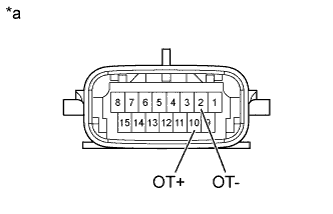
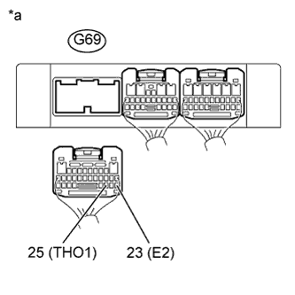

DTC P0712 Низкий уровень сигнала на входе цепи датчика температуры трансмиссионной жидкости "A" |
DTC P0713 Высокий уровень сигнала на входе цепи датчика температуры трансмиссионной жидкости "A" |
| Код DTC | Условие обнаружения DTC | Неисправный участок |
| P0712 | В течение не менее 0,5 с сопротивление датчика температуры ATF меньше 79 Ом (логика диагностирования за 1 поездку). |
|
| P0713 | В течение не менее 0,5 с сопротивление датчика температуры ATF превышает 156 кОм, или выполняется любое условие (логика диагностирования за 1 поездку): (A) С момента запуска двигателя прошло не менее 550 с, а температура охлаждающей жидкости двигателя или воздуха на впуске не превышает -29,375°C (-20,875°F). (B) С момента запуска двигателя прошло не менее 10 с, а температура охлаждающей жидкости двигателя или воздуха на впуске превышает -29,375°C (-20,875°F). |
|

| DATA LIST |
Прогрейте двигатель.
Выключите зажигание.
Подсоедините портативный диагностический прибор к DLC3.
Включите зажигание (IG).
Включите портативный диагностический прибор.
Войдите в следующие меню: Powertrain / ECT / Data List.
Снимите показания параметров в режиме Data List, отображаемые на дисплее диагностического прибора.
| Информация на дисплее прибора | Измеряемая величина / диапазон измерения | Нормальное состояние | Замечание по диагностике |
| A/T Oil Temperature 1 | Показание датчика температуры ATF № 1 / Мин.: -40,0°C (-40,0°F) Макс.: 215,0°C (419,0°F) |
| Если отображается значение -40°C (-40°F) или 215°C (419°F), в цепи датчика температуры ATF № 1 имеется обрыв или короткое замыкание. |
| Отображаемая температура | Неисправность |
| -40°C (-40°F) | Обрыв цепи |
| Не менее 150°C (302°F) | Короткое замыкание |
| 1.ПРОВЕРЬТЕ ЖГУТ ЭЛЕКТРОПРОВОДКИ ТРАНСМИССИИ (ДАТЧИК ТЕМПЕРАТУРЫ ATF № 1) |
|  |
Отсоедините разъем C30 жгута электропроводки трансмиссии.
Измерьте сопротивление в соответствии со значениями, приведенными в таблице ниже.
| Контакты для подключения диагностического прибора | Условие | Заданные условия |
| 2 (OT-) - 10 (OT+) | Всегда | 79 Ом - 156 кОм |
| 2 (OT-) - масса | Всегда | 10 кОм или более |
| 10 (OT+) - масса | Всегда | 10 кОм или более |
| Температура ATF | Заданные условия |
| 10°C (50°F) | 5 - 8 кОм |
| 25°C (77°F) | 2,5 - 4,5 кОм |
| 110°C (230°F) | 0,22 - 0,28 кОм |
| *a | Устройство с неподсоединенным жгутом проводов (жгут электропроводки трансмиссии) |
|
| ||||
| OK | |
| 2.ПРОВЕРЬТЕ ЖГУТ ПРОВОДОВ И РАЗЪЕМ (ЖГУТ ЭЛЕКТРОПРОВОДКИ ТРАНСМИССИИ – TCM) |
|  |
Отсоедините разъем G69 TCM.
Измерьте сопротивление в соответствии со значениями, приведенными в таблице ниже.
| Контакты для подключения диагностического прибора | Условие | Заданные условия |
| G69-25 (THO1) - G69-23 (E2) | Всегда | 79 Ом - 156 кОм |
| G69-25 (THO1) - масса | Всегда | 10 кОм или более |
| G69-23 (E2) - масса | Всегда | 10 кОм или более |
| *a | Вид сзади разъема со стороны жгута проводов (к TCM) |
|
| ||||
| OK | ||
| ||